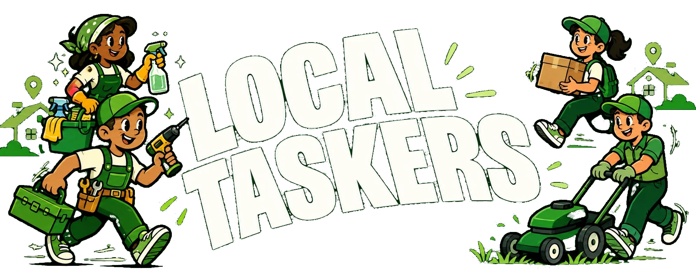

Find the right person for the task you need done.
Many skilled people, such as tailors, mechanics and hairdressers, do not use a smartphone or the internet. A local coordinator joins StreetTasker for them, speaks to them by phone, and looks after their bookings, so customers can still find and book them.
Local Taskers are skilled workers who may not have a smartphone, reliable internet, or a way onto online marketplaces. They cannot sign in themselves. Their coordinator sets up and manages their StreetTasker profile for them, with their agreement.
“Their work stays local. Their opportunities grow.”
Bridging traditional artisan craftsmanship with local residential demand.
Their coordinator helps with registration, the identity check and every phone call, so nobody is left out because of technology.
Customers find real craftspeople and tradespeople in their own neighbourhood, and those people earn from the work.
A coordinator is a trusted person from the community who acts as the link between Local Taskers and StreetTasker. They know the people they register, they can meet them in person, and they are fully in charge of looking after them on the platform.
The coordinator meets the Local Tasker, explains how StreetTasker works, and records their skills, prices, area and availability only after the Local Tasker agrees.
Customers message the coordinator. The coordinator calls the Local Tasker, confirms the job and the price, and passes the answer back.
Every coordinator passes a short test and an identity check before starting. Their work on a Local Tasker is recorded.
From the first meeting to the money in the Local Tasker's own bank account.
The coordinator explains what StreetTasker is and records how the Local Tasker agreed: in person, by phone or in writing. Nothing is published without it.
They add the Local Tasker's public name, area, services and agreed prices, and photos if the Local Tasker agrees. The Local Tasker's phone number and full name stay private to the coordinator.
The coordinator helps the Local Tasker complete a short identity check. A profile only goes live once the Local Tasker's identity is verified.
When everything is ready and the Local Tasker agrees, the coordinator publishes the profile. Customers then see it with the Local Tasker and phone-assisted labels.
The customer books as usual. The request goes to the coordinator, not to a phone the Local Tasker does not have.
The coordinator calls the Local Tasker, confirms they are available, reads the price back to them, and sends the customer a quote. The customer approves it and pays. The money is held safely until the job is done.
When the customer is happy they give the coordinator a release code. Entering it releases the payment straight to the Local Tasker's own verified bank account. The coordinator earns a commission from the service fee.
If something goes wrong on a job, a problem can be reported and StreetTasker support steps in.
A simple, phone-assisted way to hire someone who is not online.
Browse Local Taskers near you and see their services, prices and photos.
Send a booking request as you would for any tasker on StreetTasker.
Their coordinator calls the Local Tasker, confirms they can do the job, and sends you a quote to approve.
Your payment is held safely. When the job is finished and you are happy, you give your release code to the coordinator.
Discover skilled people doing great work in communities around you.
Many skilled workers can do excellent work but do not have the technology to join an online marketplace. Local Taskers removes that barrier by using people and simple phone calls to connect local skills with real customers.
Local Taskers reach customers beyond the people who walk past their workshop or stall.
Payment goes straight to the Local Tasker's own verified bank account once the job is released. The price they agreed is the price the customer sees.
Find skilled people in your community and book them through StreetTasker. You support local craftspeople and get good work in return.
If you know tailors, mechanics, hairdressers or other tradespeople who are not online, you can become a coordinator and bring them to StreetTasker.
Tell us how many Local Taskers you can bring, the area you would cover, and how you know these people.
If approved, you get an email with a link to read the coordinator guide and take a short test. You have 3 tries a day.
A coordinator account is separate from a customer or tasker account.
You complete a short identity check before you can start. Then you add your first Local Tasker.
Organisations that want to help enrol Local Taskers can read how to partner with us or write to contact@streettasker.com.
Every day, tailors, mechanics, hairdressers and caterers in our communities do excellent work. Many are still shut out of the digital economy, not because of their skill, but because they have no smartphone, no data, no way to prove who they are online and no one to speak for them.
Local Taskers is how StreetTasker closes that gap, one person at a time. We are looking for partners who want to help us close it faster, so that equal opportunity is something skilled people can use, not just something we talk about.
We are building this with partners. If one of these fits your mission, tell us and we will shape it with you.
Help pay for the in-person work of bringing skilled people onto StreetTasker: the meeting, the identity check and the bank account set-up.
Support trusted people from the community to reach neighbourhoods and trades that online platforms have not reached.
Contribute towards tools, materials and training that let a Local Tasker take on more work, or better-paid work.
Work with artisans, cooperatives or trade associations? Introduce them, or have your field staff apply as coordinators.
To talk about a partnership, write to contact@streettasker.com. We will reply with how we could work together.
Give by bank transfer to the account below. Then email us your payment reference so we can confirm receipt and acknowledge your gift.
Please check the account name shows as Street Taskers Ventures in your banking app before you confirm the transfer.
Local Taskers and coordinators both complete an identity check before they go live or start work.
Customer payments are held until the job is done and the release code is given.
A Local Tasker's phone number and full name are only visible to their coordinator.
Browse Local Taskers in your area, or become a coordinator and help skilled people in your community earn more.